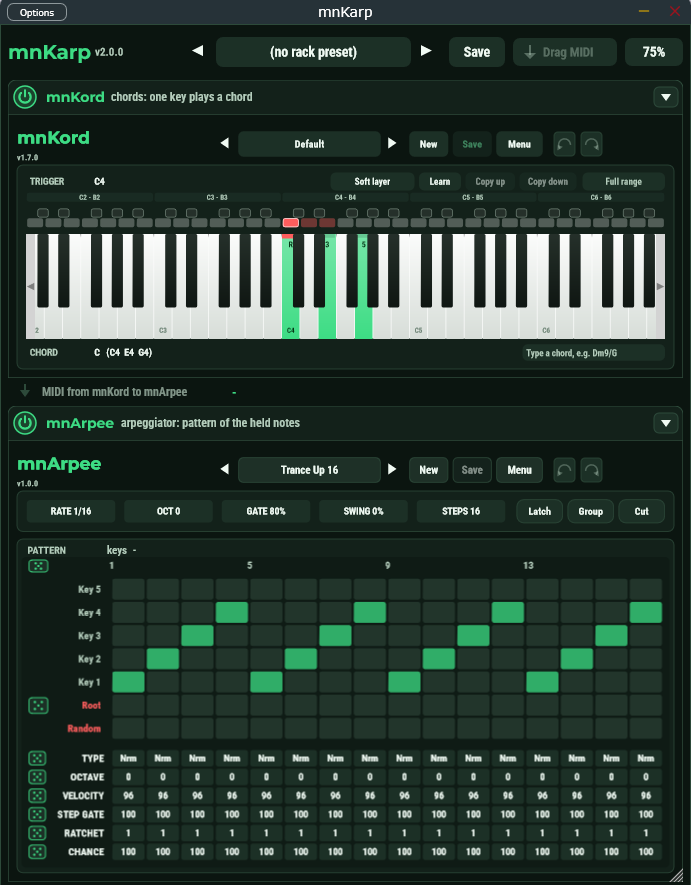

Free MIDI rack plugin · VST3
mnKarp – chords and arpeggios in one rack (VST3)
Chords and arpeggios in one rack.
mnKarp puts mnKord (one key, a whole chord) above mnArpee (a step-pattern arpeggiator) in one plugin. Play a single note and hear the chord as a pattern; switch either one off and the MIDI passes it untouched.
- v2.0.0
- VST3 · Windows x64
- Free and open source (AGPL-3.0)

How it works
mnKarp is a MIDI effect: it makes no sound itself, it sits in front of your synth.
Play one key
Your MIDI keyboard sends a single note.
mnKord makes it a chord
The key is looked up in mnKord's preset and becomes a chord. You see the notes in the line under it.
mnArpee plays it as a pattern
The chord goes on to mnArpee, which plays it in time with your DAW, step by step.
Two plugins, one rack
mnKord and mnArpee, with what a rack adds.
On/off for each
A power switch on each stage. Off, the MIDI passes it untouched, and nothing it played is left hanging.
Rack presets
Both plugins' presets and the two switches under one name. They are also the DAW's program list.
Automation
The switches and mnArpee's rate, gate, swing, octave, steps, latch, group and cut are host parameters.
Drag MIDI
Drag the last thing you played into the DAW as a MIDI clip, on the bar it started on.
One keyboard for chords
Pick the trigger key in the lane above the keys, click the chord notes on the same keyboard. Colours tell them apart.
Fits the screen
One size for both windows (60 to 115%), equally wide, and fold a stage away when you don't need it.
Everything in the box
The full feature list of mnKarp 2.0.0.
The rack
- mnKord (chords) above mnArpee (arpeggiator): the MIDI goes through mnKord, then mnArpee.
- A power switch for each stage; a stage that is off passes the MIDI and is still editable.
- Switching a stage off releases the notes it is sounding.
- Fold a stage's window away; the project remembers it.
- One size for both windows, from 60% to 115%; both are always equally wide.
- The notes between the two stages, live.
Presets and the DAW
- Rack presets: both plugins' presets and the switches under one name, shared by every project.
- Previous / next, Save, Save as, Revert, Delete; a dot shows unsaved changes.
- The DAW's program list is the list of the rack presets (128 slots, oldest first).
- Host parameters: the two switches and mnArpee's eight values, for automation and MIDI controllers.
- Drag MIDI: the last take as a MIDI clip (with its tempo, starting on a bar), or save it as a file.
Inside
- The installed mnKord and mnArpee plugins themselves: their windows, presets, libraries, browsers and Undo / Redo.
- An update of mnKord or mnArpee updates the rack too.
- The notes mnKord hands to mnArpee, shown live between the two.
- mnKord's and mnArpee's preset libraries are shared with the single plugins.
- The project keeps the full state of both stages.
- Windows installer; user guide in English and Hungarian.
Requirements
- Windows 10 or 11, 64-bit
- A DAW that hosts VST3 plugins (Bitwig, FL Studio, Reaper, Cubase, Ableton Live ...)
- A synth or sampler after mnKarp on the same track
Questions
Is mnKarp free?
Yes. It is free and open source under the AGPL-3.0, with no account and no copy protection.
Do I need mnKord and mnArpee too?
Yes. mnKarp is a rack that loads the installed mnKord.vst3 (1.7.0 or later) and mnArpee.vst3, with their windows and preset libraries. Install both first.
Why is there no sound?
mnKarp is a MIDI effect: put a synth or a sampler after it on the same instrument track.
Can I automate the arpeggiator?
Yes. mnArpee's rate, octave, gate, swing, steps, latch, group and cut, and the two on/off switches, are host parameters.
How do I get the result into my DAW as MIDI?
Play, then drag the Drag MIDI button onto a track. The clip starts on the bar of its first note and carries the tempo. A click saves it as a file instead.
Does it run on macOS or Linux?
Not yet: mnKarp is built for Windows (64-bit VST3).
Get mnKarp
Free, no account, no copy protection.
Windows
- Download mnKarp-2.0.0-win-x64-setup.exe from the latest release.
- Run it. The plugin goes to the standard VST3 folder.
- In your DAW, put mnKarp on an instrument track, before a synth.
Documentation and source
- User guide (PDF)
- Source code on GitHub
- What changed
- mnKord, the chord plugin alone
- mnArpee, the arpeggiator alone
Only for Windows for now.